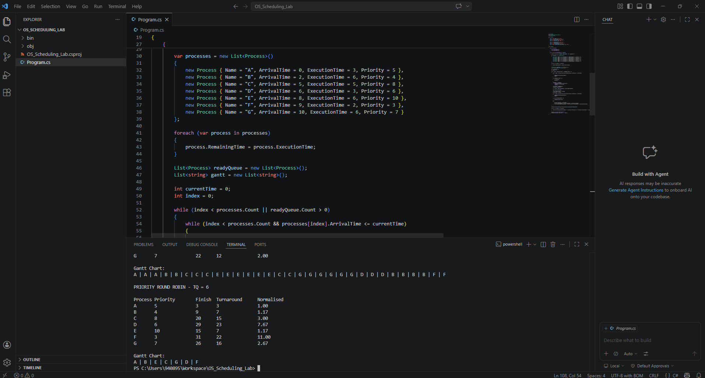
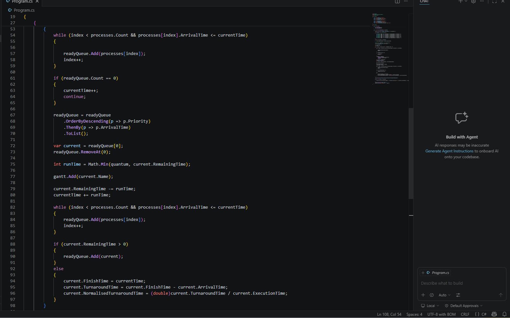
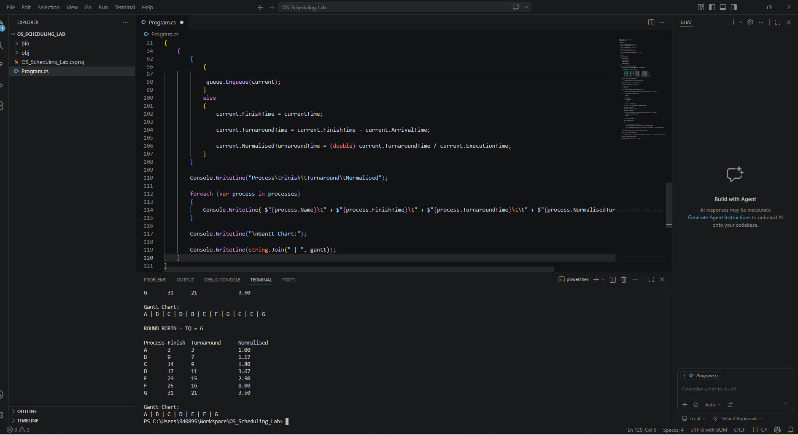
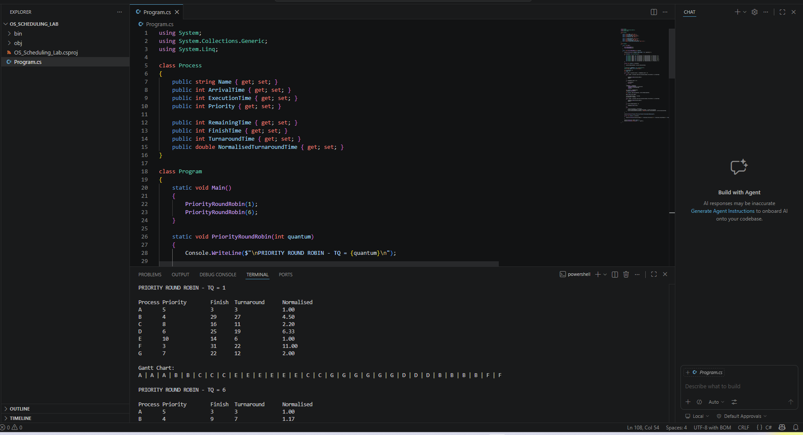

OS Scheduling Lab
1. Long Term Scheduling
I wrote a C# program that filters jobs based on priority into ready queues while allowing only high priority jobs to get admitted.


2. FCFS Scheduling
I implemented First-Come-First-Served scheduling. I created a Process class to hold the metrics of each process, sorted processes by arrival time and calculated finish time, turnaround time and normalised turnaround time. I also printed the Gantt chart showing execution order. Process F had a normalised turnaround of 8.


3. Round-Robin Scheduling
I implemented Round Robin scheduling with 4 varying time slices (TQ = 1, 3, 4, 6). Each process has a remaining time field which decreases by the time slice each time it runs. When remaining time reaches zero the process ends, otherwise it rejoins the queue. The three metrics (finish time, turnaround, normalised turnaround) were calculated for each TQ value. As TQ increases, average turnaround time increases towards the FCFS value.




4. Priority-Based Round Robin
I extended the Round Robin simulation to add priority-based scheduling. The ready queue is sorted by priority so higher priority processes run first. I tested with TQ = 1 and TQ = 6.
